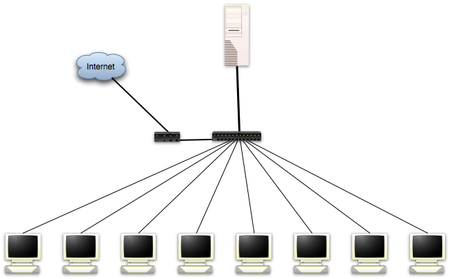

LTSP
Dieser Artikel wurde für die folgenden Ubuntu-Versionen getestet:
Dieser Artikel ist größtenteils für alle Ubuntu-Versionen gültig.
Artikel für fortgeschrittene Anwender
Dieser Artikel erfordert mehr Erfahrung im Umgang mit Linux und ist daher nur für fortgeschrittene Benutzer gedacht.
Zum Verständnis dieses Artikels sind folgende Seiten hilfreich:
Das Linux Terminal Server Project (LTSP) dient als eine Art Framework, um eine Umgebung einzurichten, die es erlaubt, einfache Thin Clients (Rechner mit minimaler Ausstattung, meist ohne Festplatte) über das Netzwerk zu starten und alle Anwendungen auf einem zentralen Server auszuführen.
Der Hauptvorteil besteht darin, dass nur der Server verwaltet und gepflegt werden muss. Sämtliche Anwendungen brauchen nur einmal installiert werden, um jedem zur Verfügung zu stehen. Wenn ein Client ausfällt, kann einfach ein neuer aufgestellt werden und der Benutzer kann in wenigen Minuten die Arbeit wieder aufnehmen. Nachteilig ist, dass kein Client mehr nutzbar ist, auch wenn nur ein Teil der notwendigen Netzwerk-Infrastruktur ausfällt.
Voraussetzungen¶
Generell¶
Natürlich kann man unter jeder Ubuntu-Version LTSP installieren. Jedoch empfiehlt sich für den Einsatz ein stabiles und lange unterstütztes Betriebssystem. Das geht am besten mit der LTS-Version Ubuntu 14.04.
Hardware¶
Server¶
Da sämtliche Aufgaben vom Client auf den Server übertragen werden, muss der Server über eine entsprechende Ausstattung verfügen. Dabei ist die Frage nach der CPU bei modernen Mehrkern-Prozessoren nicht mehr relevant. Wichtiger sind vielmehr:
möglichst viel Arbeitsspeicher (RAM)
schnelle Festplatten und
eine Netzwerkinfrastruktur mit 100-Mbit/s-Ethernet (empfohlen wird Gigabit-Ethernet)
In der Vergangenheit galt lange als Faustregel 256 MiB RAM für die Serveranwendungen und zusätzlich 30 MiB RAM für jeden angeschlossenen Client. Werden viele grafische Anwendungen gleichzeitig verwendet, wurde pro Client mit 128 MiB RAM gerechnet. Ein Server, der 5 Clients bedienen sollte, musste also mindestens 512 MiB RAM besitzen, ein Server für 20 Clients entsprechend 1 GiB. Bei anspruchsvollen Desktop-Umgebungen wie Unity, GNOME 3 oder KDE sind diese Zahlen eher nach oben zu korrigieren.
Auch auf eine gute Datenrate der Festplatte(n) ist zu achten. SCSI- oder SATA-Festplatten sind empfehlenswert. Bei den Festplatten ist weiter darauf zu achten, dass bei vielen Clients die Platten im Server im Dauerbetrieb sind und somit mechanisch stark beansprucht werden. Man sollte daher in Erwägung ziehen, spezielle "Server"-Festplatten zu kaufen, die eine höhere Lebensdauer auch bei hoher Beanspruchung haben.
Damit die Benutzer des Servers ihr Homeverzeichnis nicht über Gebühr mit Daten füllen, und somit bei voller Partition oder Festplatte keine Anmeldung mehr möglich ist, sollte man über eine Begrenzung (Quota) für die Benutzer bzw. Gruppen nachdenken.
Client¶
Günstig in der Anschaffung sind einfache PCs mit integriertem Intel- oder Nvidia-Grafikchipsatz. Originäre Thin Clients sind teurer oder verfügen oft über keinen unterstützten Grafikchipsatz. Bei der Anschaffung von Thin Clients ist darauf zu achten, dass diese nicht über einen ARM-Prozessor verfügen. Die Clients starten über eine bootfähige Netzwerkkarte via PXE [1]. Auf sehr alter Hardware lässt sich diese Funktion mit gPXE nachinstallieren.
Eine andere Variante, die lokale Rechner (Fat Clients) mit den Vorteilen eines LTSP-Servers kombiniert, wird im Artikel LTSP/LTSP-PNP mit Fat Clients beschrieben. Wie man auf einem Client vorhandene Hardware einbindet, zeigt beispielhaft der Artikel LTSP/Lokale Webcam nutzen.
Desktop¶
Prinzipiell funktioniert LTSP mit jeder Desktop-Umgebung (inklusive Audio-Unterstützung). Jedoch gelingt der Zugriff auf externe USB-Speichermedien an Thin Clients nach den bisherigen Erfahrungen nur mit dem Dateimanager Nautilus intuitiv und problemlos. Unity als Desktop wurde erfolgreich getestet. Eine weitere Möglichkeit wäre ein Xfce-Desktop, bei dem man Thunar durch Nautilus ersetzt.
Wenn die Verwendung von Speichermedien z. B. in Form von USB-Speichersticks durch die Benutzer unwichtig ist, spielt die Desktop-Umgebung eine untergeordnete Rolle.
Netzwerk¶
|  |
Strukturbeispiel eines LTSP-Netzwerkes (Quelle: wireload.net  ) ) |
In der Ausgangskonfiguration wird bei der Installation von LTSP davon ausgegangen, dass für die Thin Clients ein eigenes Netzwerk vorhanden ist und dass der Server über eine zweite Netzwerkkarte mit dem Internet verbunden ist.
Diese Konfiguration ist in der Praxis sicherlich nur selten vorzufinden. Statt dessen befinden sich in der Regel Server, Thin Clients und diverse andere Hardware in einem gemeinsamen Netzwerk, das über ein Gateway mit dem Internet verbunden ist. Dieses Gateway ist oft ein Hardware-Router [2] mit Firewall, der gleichzeitig auch DNS- und DHCP-Server ist. Eine Möglichkeit zur Integration ist im Artikel LTSP im Heimnetzwerk zu finden.
Eine andere Variante besteht darin, den vorhandenen DHCP-Server zu deaktivieren. Stattdessen wird ein eigener DHCP-Server [3] auf dem LTSP-Server installiert. Dann sollte man dem Server und allen anderen Netzwerkgeräten eine IP-Adresse [4] und ein Gateway fest zuordnen, damit diese auch dann ins Internet finden, wenn der LTSP-Server aus Wartungs- oder Stromspargründen abgeschaltet wird.
Links¶
Intern¶
LTSP/lts.conf - Konfiguration und Steuerung von Thin Clients
LTSP/LTSP im Heimnetzwerk - vorhandenen DHCP-Server nutzen
LTSP/Lokale Webcam nutzen - auf einem Client vorhandene Hardware einbinden
LTSP/LTSP-PNP mit Fat Clients - Server mit Fat statt Thin Clients
LTSP/Windows mit VirtualBox - Windows als virtuelle Maschine zur Verfügung stellen
Epoptes - Steuerung entfernter Rechner
- Erstellt mit Inyoka
-
 2004 – 2017 ubuntuusers.de • Einige Rechte vorbehalten
2004 – 2017 ubuntuusers.de • Einige Rechte vorbehalten
Lizenz • Kontakt • Datenschutz • Impressum • Serverstatus -
Serverhousing gespendet von